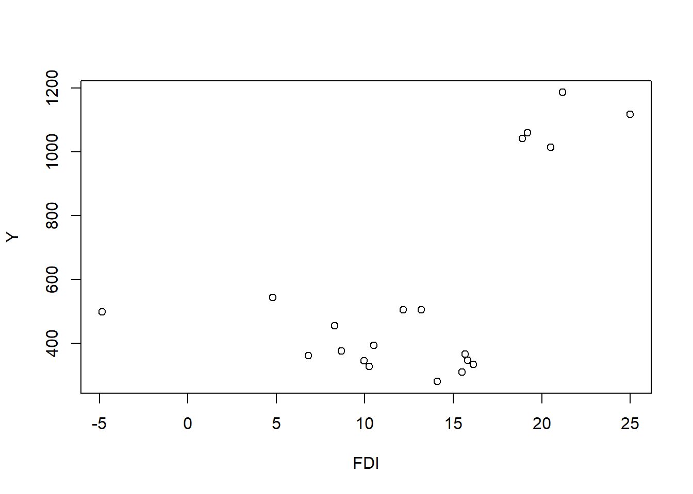

setwd('C:/Users/Aqilah Ady/Documents/SEMESTER 3/metopel')
library('tidyverse')
library('readxl')Pengaruh FDI terhadap PDB Indonesia, Thailand, Filiphina, dan Vietnam
Metode Penelitian Politeknik APP Jakarta

logo Politeknik APP Jakarta
1 Pendahuluan
1.1 Latar belakang
Indonesia, Thailand, Filipina dan Vietnam merupakan negara berkembang yang menganut ekonomi terbuka dimana pemerintah tidak menghindari atau luput dari interaksi dengan pihak swasta atau negara lain dalam perekonomiannya.
Dalam hal ini, negara berkembang pasti membutuhkan dana atau sumber daya yang besar untuk membangun ekonomi yang merati dan makmur bagi rakyatnya. Akibat rendahnya produktivitas dan tingginya konsumsi negara berkembang dengan dana yang terbatas, mereka harus mencari sumber pembiayaan lain untuk melaksanakan pembangunan di negaranya. Salah satu caranya adalah melalui sumber dana negara asing, penanaman modal asing atau Foreign Direct Investment (FDI) dan subsidi. Menurut Panayotou (1998) Sarwedi (2002), penanaman modalasing atau Foreign Direct Investment (FDI) memiliki risiko bisnis yang relatif rendah dan menguntungkan dibandingkan dengan sumber yang lain.
FDI sendiri merupakan modal yang diperoleh dari luar negeri yang dialihkan ke sektor swasta baik melalui investasi asing langsung maupun investasi tidak langsung. Perkembangan ekonomi suatu negara diukur dengan pertumbuhan ekonomi dan menunjukkan peningkatan produksi barang dan jasa di suatu wilayah ekonomi selama periode waktu tertentu atau sering disebut sebagai produk domestik bruto ( PDB).
1.2 Batasan Masalah
Beberapa negara berkembang seperti Indonesia, Thailand, Filipina, dan Vietnam merupakan negara yang dikatakan cukup strategis. Hal ini membuat negara tersebut menjadi salah satu negara tujuan para investor datang ke negara tersebut karena pangsa pasar yang besar. Masuknya Penanaman Modal Asing (FDI) ke dalam negri memiliki efek multiplier, seperti transfer modal, teknologi, keterampilan manajerial dan pengetahuan dari negara maju ke negara berkembang. Pelaksanaan transfer tersebut dapat meningkatkan produktivitas dan meningkatkan produksi nasional, yang mempengaruhi pertumbuhan ekonomi atau PDB suatu negara. Selain itu, dampak lain dari FDI adalah penciptaan lapangan kerja yang merupakan kunci untuk mengatasi kemiskinan dan pengangguran. Percepatan pertumbuhan ekonomi bagi negara berkembang merupakan upaya untuk mengejar ketertinggalan dari negara lain(negara maju).
1.3 Rumusan Masalah
Apakah produk domestik bruto berpengaruh signifikan terhadap investasi di negara berkembang?
1.4 Tujuan dan Manfaat Penelitian
Berdasarkan latar belakang dan rumusan masalah di atas, maka tujuan yang akan dicapai dari penelitian ini adalah:
1. Menganalisis pengaruh produk domestik bruto terhadap investasi di Indonesia, Thailand, filiphina, dan Vietnam.
2. Menganalisis pengaruh nilai FDI di Indonesia, Thailand, filiphina, dan Vietnam.
Manfaatnya penelitian:
1. Memberitahu kepada pembaca tentang pengaruh FDI terhadap PDB negara berkembang salah satunya untuk negara Indonesia, Thailand, filiphina, dan Vietnam.
2. Dapat mengetahui pengaruh nilai FDI terhadap Indonesia, Thailand, filiphina, dan Vietnam.
1.5 Package
- Investasi
pengertian Investasi merupakan suatu istilah dengan beberapa pengertian yang berhubungan dengan keuangan dan ekonomi. Menurut Sukirno (2013: 121), investasi diartikan sebagai pengeluaran atau penanaman modal untuk membeli barang-barang modal dan perlengkapan-perlengkapan produksi untuk menambah kemampuan memproduksi barang-barang dan jasa-jasa yang tersedia dalam perekonomian. Menurut Sunariyah (2011: 4), investasi adalah penanaman modal untuk satu atau lebih aktiva yang dimiliki dan biasanya berjangka waktu lama dengan harapan mendapatkan keuntungan di masa-masa yang akan datang. Berdasarkan persepsi dari beberapa ahli tersebut, dapat disimpulkan bahwa investasi adalah penanaman modal oleh seseorang atau perusahaan dalam suatu aset jangka panjang dengan harapan memperoleh keuntungan di masa yang akan datang.
Peran Investasi dalam pertumbuhan ekonomi Dengan investasi, dapat membawa negara ke dalam kegiatan ekonomi tertentu. Investasi berkelanjutan dapat menciptakan lapangan kerja, menciptakan barang dan jasa yang dipasarkan ke konsumen saat mengkonsumsi barang atau jasa, dan berinteraksi dengan produsen dalam hubungannya dengan investor, yang pada gilirannya menciptakan perkembangan ekonomi negara.
- Foreign Direct Investment(FDI)
a. pengertian Menurut Krugman yang dimaksud dengan FDI adalah arus modal internasional dimana perusahaan dari suatu negara mendirikan atau memperluas perusahaannya di negara lain (Madura, 2011: 36) FDI (Foreign Direct Investment) atau investasi langsung luar negeri adalah salah satu ciri penting dari sistem ekonomi yang semakin mengglobal.
b. Manfaat manfaat yang telah dijelaskan, Arifin dkk (2008: 178), juga menjelaskan manfaat FDI bagi host country antara lain:
- meningkatkan kompetisi dalam perekonomian negara penerima. Kehadiran perusahaan baru di luar sektor perdagangan dapat meningkatkan output dan menurunkan tingkat harga domestik, sehingga secara keseluruhan dapat meningkatkan kesejahteraan masyarakat
- memberikan keuntungan dalam akses pasar ekspor
- Tujuan Menurut Undang-undang No. 25 Tahun 2007 tujuan penanaman modal asing adalah:
Meningkatkan pertumbuhan ekonomi nasional
Menciptakan lapangan kerja
Meningkatkan pembangunan ekonomi berkelanjutan
Meningkatkan kemampuan daya saing dunia usaha nasional
Meningkatkan kapasitas dan kemampuan teknologi nasional
Mendorong pengembangan ekonomi kerakyatan
Meningkatkan kesejahteraan masyarakat
Teori perdagangan internasional secara umumnya dibagi menjadi dua bagian, yaitu teori klasik dan teori modern:
a. Teori Klasik Teori klasik mulai berkembang pada abad ke-18, para pelopornya antara lain Adam Smith, David Hume, John Locke dan sebagainya sangat menentang teori merkantilisme tersebut. Terbagi menjadi dua teori lagi diantaranya Teori Keunggulan Mutlak (Absolute Advantage) dan Teori Keunggulan Komparatif (Comparative Advantage)
b. Teori modern Menurut teori H-O, suatu negara akan berspesialisasi dalam produksi dan ekspor barangbarang yang input utamanya relatif sangat banyak di negara tersebut, serta mengimpor barang yang input utamanya tidak dimiliki oleh negara tersebut (jumlahnya terbatas).
Produk Domestik Bruto (PDB)
a. Pengertian PDB Produk Domestik Bruto (PDB) adalah produk nasional yang dihasilkan faktor-faktor produksi dalam negeri (milik warga negara dan orang asing) dalam suatu negara (Sukirno, 2011: 17). Menurut Latumaerissa (2015: 18), PDB atau GDP adalah jumlah nilai seluruh barang dan jasa yang diproduksi oleh suatu negara dalam periode tertentu atau satu tahun termasuk barang dan jasa yanng diproduksi oleh perusahaan milik penduduk negara tersebut dan oleh penduduk negara lain yang tinggal di negara bersangkutan.
perhitungan pertumbuhan ekonomi dan PDB perhitungan pertumbuhan ekonomi melalui metode aritmatik:
Ggdp = (GDPn-GDPt-1)/(GDPT-1) X 100% Keterangan:
-GGDP : Tingkat pertumbuhan ekonomi
-GDPn : GDP pada tahun ke n,
-GDPt-1: GDP tahun sebelumnya PDB
Dengan Pendekatan Pengeluaran
Y = C + I + G + (X-M)
Keterangan:
-Y : Pendapatan nasional/GDP
-C : Konsumsi rumah tangga/consumption
-G : Pengeluaran pemerintah/Government purchase
-I : Investasi/investment
-X : Ekspor/export
-M : Impor/import PDB Pendekatan
Pendapatan (Income Approach)
Y = r + w + i + p
Keterangan:
-Y : Pendapatan nasional
-r : Pendapatan bersih dari sewa (rent)
-w : Pendapatan dari upah atau gaji (wage)
-i : Bunga (interest)
-p : Keuntungan (profit)
1.6 Kerangka Penelitian
Pengaruh FDI terhadap PDB di negara berkembang seperti Indonesia, Thailand, Filipina dan Vietnam menunjukakan kontribusi yang semakin signifikan terhadap pertumbuhan ekonomi suatu negara terutama negara berkembang. Hal ini terkait dengan semakin terbukanya sistem ekonomi. Keterbukaan sistem ekonomi banyak diperbincangkan belakangan ini. Secara teoritis, menjadi faktor peningkatan kesejahteraan bagi negara-negara di dalamnya, seperti melalui pembukaan akses pasar lebih besar, dorongan mencapai efisiensi dan daya saing ekonomi lebih tinggi, termasuk terbukanya peluang penyerapan tenaga kerja yang lebih besar. Maka kerangka pikir atau penelitian ini dapat digambarkan pada gambar berikut.

2 Metode Penelitian
2.1 Data
Data yang digunakan pada metode penelitian ini adalah data time series pada perekonomian Indonesia, Thailand, Filipina dan Vietnam dari tahun. Selanjutnya, analisis dilakukan dengan metode kuantitatif. Metode pengumpulan data observasi pada penelitian ini dilakukan dengan observasi tidak langsung, yaitu dengan mengunjungi situs World Bank untuk memperoleh data variabel yang diteliti. Sehingga didapat data X(Nilai FDI) dan Y(Nilai PDB) pada masing-masing negara Indonesia, Thailand, Filipina dan Vietnam.

2.2 Metode Analisis
Menggunakan R sebagai alat bantu pengolahan data serta Metode yang digunakan adalah regresi univariat atau Ordinary Least Square (OLS) dengan 2 variabel independen. Penelitian ini bermaksud mencari perbandingan jika FDI mengalami penurunan/kenaikan terhadap PDB. Spesifikasi yang dilakukan adalah:
3 Pembahasan
3.1 Pembahasan Masalah
Pertumbuhan Ekonomi atau PDB menjadi salah satu faktor yang sangat diperhatikan oleh pemerintah. Untuk itu diperlukan FDI agar meningkatkan produktivitas dan meningkatkan produksi nasional. Secara umum FDI Berhubungan positif dengan PDB. Artinya semakin tinggi FDI atau penanman investsi negara asing terhadap negara maka semakin tinggi juga PDB yang dihasilkan.
library(readxl)
dat<-read_excel('METOPELS.xlsx')
head(dat)# A tibble: 6 × 4
COUNTRY YEAR X Y
<chr> <dbl> <dbl> <dbl>
1 Indonesia 2017 20.5 1015
2 Thailand 2017 8.29 456
3 vietnam 2017 14.1 281
4 filiphina 2017 10.3 328
5 Indonesia 2018 18.9 1042
6 Thailand 2018 13.2 5063.2 Analisis Masalah
hasil regresinya adalah
reg1<-lm(X~Y,data=dat)
summary(reg1)
Call:
lm(formula = X ~ Y, data = dat)
Residuals:
Min 1Q Median 3Q Max
-17.0509 -0.7709 0.0524 4.7291 6.0064
Coefficients:
Estimate Std. Error t value Pr(>|t|)
(Intercept) 5.888587 2.622625 2.245 0.03755 *
Y 0.012650 0.004056 3.119 0.00593 **
---
Signif. codes: 0 '***' 0.001 '**' 0.01 '*' 0.05 '.' 0.1 ' ' 1
Residual standard error: 5.572 on 18 degrees of freedom
Multiple R-squared: 0.3509, Adjusted R-squared: 0.3148
F-statistic: 9.729 on 1 and 18 DF, p-value: 0.005925Dapat dilihat dari tabel di atas bahwa ini ggplot regresi tersebut.
plot(dat$X,dat$Y,xlab="FDI",ylab="Y")
4 Kesimpulan dan saran
4.1 Kesimpulan
Perekonomian merupakan hal yang sangat penting dan mendasar dalam sebuah negara. Keberhasilan pembangunan ekonomi suatu negara dapat diukur dan digambarkan secara umum oleh tingkat laju pertumbuhan ekonominya. Pertumbuhan ekonomi merupakan salah satu indikator yang digunakan untuk menganalisis pembangunan ekonomi. Indikator ini pada dasarnya mengukur kemampuan suatu negara untuk memperbesar outputnya dalam laju yang lebih cepat daripada tingkat pertumbuhan penduduknya. Untuk mempercepat pertumbuhan ekonomi suatu negara memerlukan dana yang sangat besar. Dengan masuknya Foreign Direct Investment (FDI) maka akan terjadi multiplier effect seperti transfer modal, teknologi, kemampuan manajerial, dan ilmu pengetahuan dari negara maju ke negara berkembang. Terjadinya transfer tersebut akan menstimulus produktivitas serta penambahan output nasional yang berdampak meningkatkan pertumbuhan ekonomi. PDB dan berpengaruh signifikan terhadap FDI di Indonesia, Thailand, Filiphina dan Vietnam. Secara parsial PDB berpengaruh positif dan signifikan, dan setiap peningkatan PDB sebesar 1% akan meningkatkan FDI sebesar 0,016 %.
4.2 Saran
Pemerintah disarankan bisa menciptakan peraturan perundang-undangan yg lebih sempurna atau lebih tegas tentang FDI baik pada Indonesia, Thailand, Filiphina dan Vietnam. Pemerintah juga disarankan lebih selektif untuk mendapat FDI, lantaran bila FDI yg masuk hanya buat mencari pasar, bisa mengancam eksistensi UKM pada setiap negara. Untuk penelitian selanjutnya, peneliti disarankan bisa menambahkan variabel ekonomi lainnya, supaya lebih tahu efek berdasarkan variabel ekonomi lainnya terhadap FDI.
5 Daftar Pustaka
The world bank. (2017-2021). Foreign direct investment, net inflows (BoP, current US$) - Indonesia, Vietnam, Philippines, Thailand.
Trading economics. (2017-2021). PDB Indonesia, Vietnam, Philippines, Thailand.
Anindita, F., Marbun, J., & Supriyadi, A. (2021). Pengaruh Produk Domestik Bruto, Nilai Ekspor, dan Inflasi Terhadap Investasi Asing Langsung Di Indonesia Pada Tahun 2010-2019. ACCOUNT: Jurnal Akuntansi Keuangan dan Perbankan, 8(1).
Kirana, Y. S. (2022). Pengaruh Produk Domestik Bruto dan Ekspor Terhadap Foreign Direct Investment di Indonesia, Thailand, dan Vietnam. Jurnal Ekonomi Aktual, 2(2), 73-78.
Shopia, A. (2018). Pengaruh Foreign Direct Investment, Ekspor dan Utang Luar Negeri Terhadap Pertumbuhan Ekonomi ASEAN (Studi pada Produk Domestik Bruto Indonesia, Malaysia dan Thailand Periode Tahun 2007–2016) (Doctoral dissertation, Universitas Brawijaya).